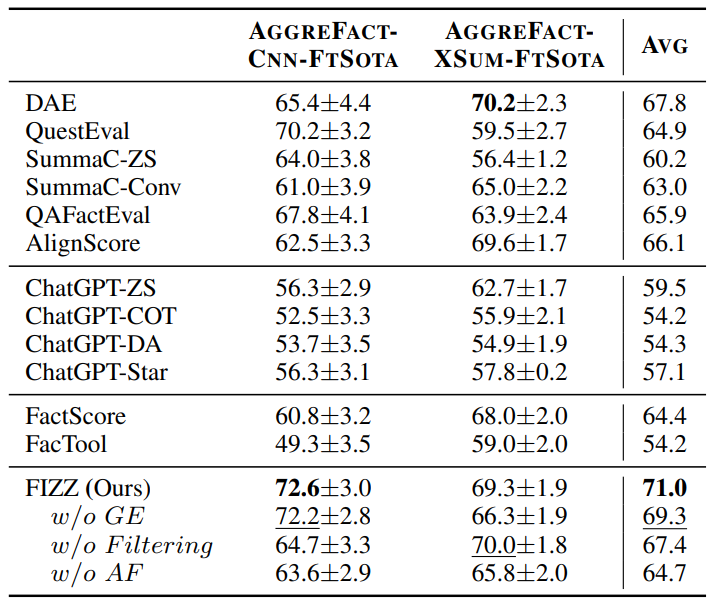
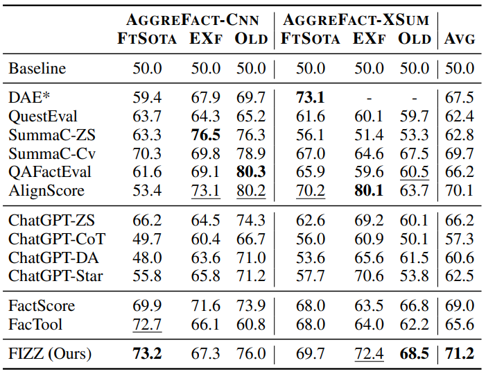

Through the advent of pre-trained language models, there have been notable advancements in abstractive summarization systems. Simultaneously, a considerable number of novel methods for evaluating factual consistency in abstractive summarization systems has been developed. But these evaluation approaches incorporate substantial limitations, especially on refinement and interpretability. In this work, we propose highly effective and interpretable factual inconsistency detection method FIZZ (Factual Inconsistency Detection by Zoom-in Summary and Zoom-out Document) for abstractive summarization systems that is based on fine-grained atomic facts decomposition. Moreover, we align atomic facts decomposed from the summary with the source document through adaptive granularity expansion. These atomic facts represent a more fine-grained unit of information, facilitating detailed understanding and interpretability of the summary's factual inconsistency. Experimental results demonstrate that our proposed factual consistency checking system significantly outperforms existing systems.
Overall flow of FIZZ. The pipeline begins by applying coreference resolution to both the summary and the document. Atomic facts are then decomposed from the summary using an LLM. These atomic facts are filtered and subsequently scored against the document. The scores are refined through granularity expansion. The ultimate score is defined by choosing the minimum score.
Effect of coreference resolution of document and atomic facts on AggreFact-FtSota splits before the process of granularity expansion.
To enhance the entailment recognition capabilities of NLI models, FIZZ first conducts centered around coreference resolution in both document and summary texts. The motivation behind this approach is driven by the inherent limitations observed in NLI models when processing texts with pronouns. Specifically, we find that NLI models tend to struggle with recognizing entailment when presented with premises and hypotheses that contain the same content but differ in their use of pronouns and explicit entity names. To address this challenge, FIZZ employs pronoun resolution in summaries by analyzing them on a sentence-bysentence basis to extract atomic facts.
Results on AggreFact-FtSota Dataset
We report balanced accuracy results using a single threshold with 95% confidence intervals on the AggreFact-FtSota split dataset. Highest performance is highligted in bold, and the second highest is underlined
Results on AggreFact Dataset
We report balanced accuracy results on the AggreFact dataset. As in Tang et al. (2023), we omitted the results from DAE, as it was trained on the XSumFaith (Goyal and Durrett, 2021) dataset, which includes human-annotated summaries from EXformer and Old.
BibTex Code Here